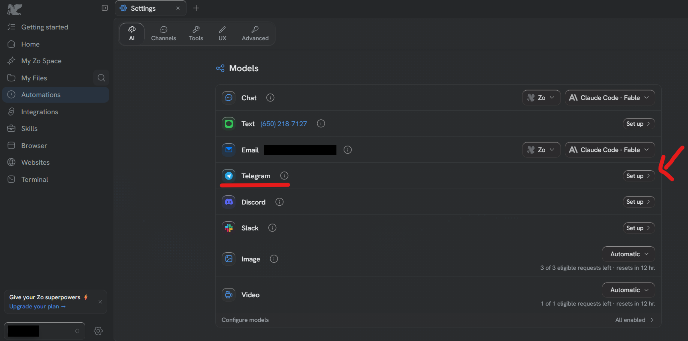

Talking to your Zo from your phone
Why
Right now you can only talk to your Zo when you are sitting at this computer.
Link Telegram and you can message it from your phone, from anywhere — like
texting a colleague who is always at their desk. Ask it something on the way to
a meeting and the answer is waiting for you.
Telegram is a free messaging app, like WhatsApp. If you do not already use it,
you will need to install it on your phone first.
Steps
- Click Settings, then the AI tab
The gear at the bottom of the left-hand menu, then AI, the first tab.
- Find Telegram in the list and click Set up
It sits in the list of ways to reach your Zo — Chat, Text, Email, Telegram,
Discord, Slack. Click Set up on the Telegram row.

- Follow what Zo asks
It will send you to Telegram to connect the two. Everything from here happens
on your phone.
Careful
Anyone who can message that Telegram account can ask your Zo things. Keep it to
your own account, and do not add it to a group chat.
This one is entirely optional. Skipping it changes nothing else — your Zo works
exactly the same from this computer.
If your screen doesn't look like this, tell me — I'll walk you through it instead.